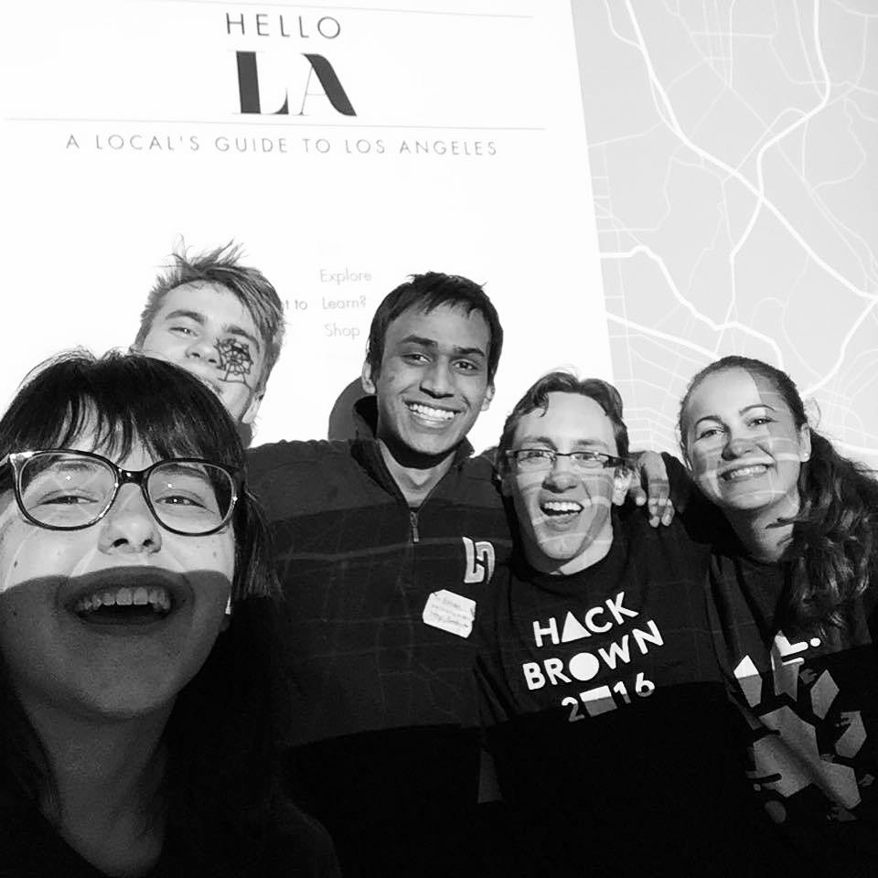
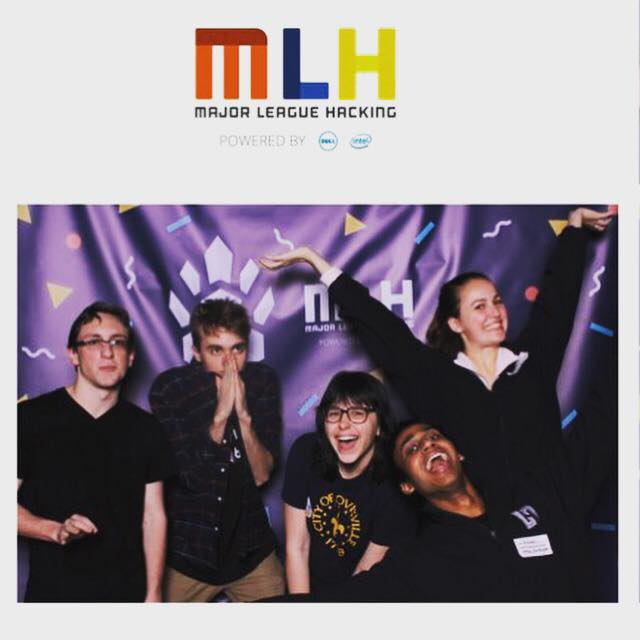
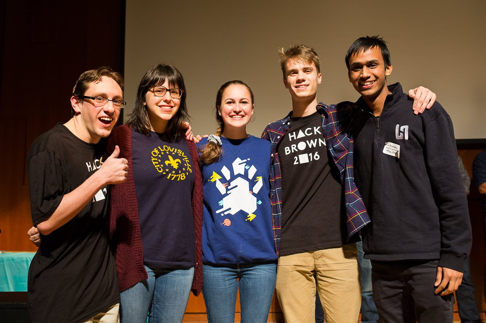

In February 2016 I had the opportunity to attend Hack@Brown, a two-day hackathon held at Brown university in Providence. I went with my friend Vanessa and we ended up forming a team with three other participants, Ashley and Rishab from UCLA, and Evan from Colorado.
The idea behind Hello LA was a local's guide to Los Angeles, as Ashley and Rishab were both LA natives. They were looking for designers and we were looking for developers, and Evan was looking for a group! Once we settled on an idea, we quickly got to work brainstorming the branding, categories, and rough layout of the website.
One of my responsibilities was creating the corresponding icons for each category of locations on the website. We wanted the icons to be inviting, simple, and usable on a wide range of sizes.
My labor of love for this project was the vector outline of Los Angeles on the background of the home page. From 1am to 3am, I traced every line on a google map screenshot of downtown LA using Adobe Illustrator. It was a tedious process, but I knew that it would be a great backdrop for the landing page. And it helped solidify the brand identity of our project.
My other contribution to this project was the user interface. Once we planned out the initial structure of the site, I wanted the homepage to showcase the variety and fast paced energy of Los Angeles. From there I developed the idea of the rotating background color, and the changing call to action. The wheel of choices can be controlled by the arrow keys, but it also moves on its own. I think this personal touch drew people in, and made the interface very user-friendly.
This was my first hackathon, and I couldn't have asked for a better one. Hello LA won best user experience, and we got to present our product during the closing ceremony. It was an eye-opening experience, getting to see how a product comes together from start to finish. I feel unbelievably lucky we found such amazing and accommodating developers, who took every wild idea Vanessa and I had, and ran with it with enthusiasm. It gave me a new-found appreciation for every team member and their job, and I can't wait for my next opportunity to work in a team like that again.
  